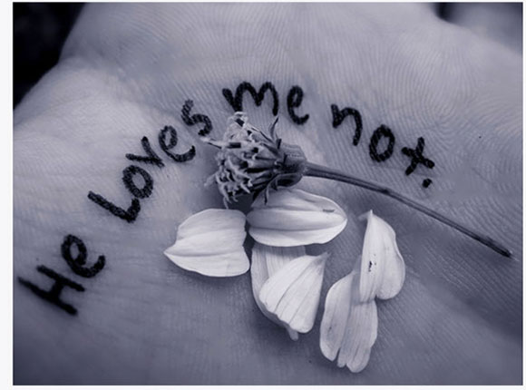

My favorite music artist is Adele. On May 5, 1988 Adele Laurie Blue Adkins was born in North London, England to her eighteen year old mother Penny Adkins. Early on in Adele’s life she developed an amazing passion and drive for music. Adele’s favorite singers growing up were Lauryn Hill, Mary J. Blige and Destiny’s Child. Eventually she went on to enroll in the BRIT School for Performing Arts and Technology, which is the same school Amy Winehouse attended.
"Everyone has talent. What is rare is the courage to follow it to the dark places where it leads"
Only four months after she graduated from school, Adele signed her first record deal. All three of Adeles albums are named after her age when she began to write them. Adeles first album was entitled “19”, which went on sale in 2008. After performing one of her songs on Saturday Night live shortly after the release, it went from NO. 40 on iTunes to NO. 1. So far, Adele has come out with two more albums
Adele’s albums
Adele’s music is very easy to relate to. I think Adele is honestly a hopeless romantic that keeps getting her heart-broken over and over by the same type of guys. Most of her songs are about her past relationships or actions and how she wished she could do things differently. Adele got to where she is today with a lot of hard work and dedication and being a brilliant song writer. In every one of her songs you can hear every emotion she went through, whether the emotion was a year ago or today.
"She broke her own heart, holding on to him."
The first time I heard one of Adele’s songs I was driving home and
Through her music Adele also sends another message to males or females; which is, it is okay to have insecurities but do not let those insecurities control you. There is more to life than worrying about how you look.
"There's only one of you, so why would you want to look like everyone else? 'Why would you want to have the same hair style as everyone else and have the same opinions as everyone else?"
Her music is a reminder to people to always stay true to yourself. In many of her songs she expresses how she loves her body regardless of what anyone else thinks. I think this is an important message to relay in this day and age, because many people have this fantasy of the perfect body and in reality their is no such thing.
Adele has earned 91 awards, including 15 Grammys and one Oscar. She is considered by many to be one of the best singers in the world. Adele waited over four years between the release of 21 and 25. One of her greatest strengths: the ability to take her time and I can not wait to continue her musical journey with her.